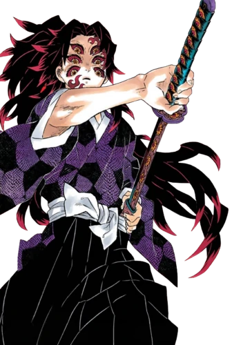
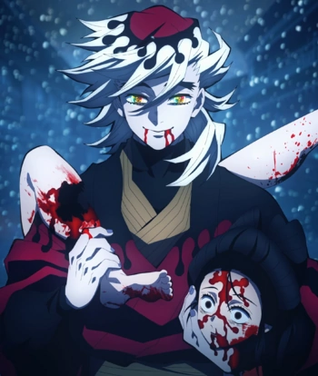
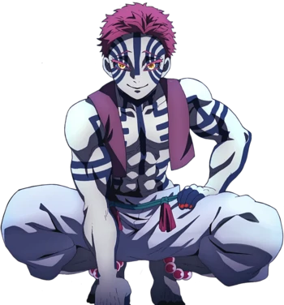

КОКУШИБО

ПЕРВАЯ СТАРШАЯ ЛУНА
Если оценивать его поведение на собрании Высших Лун, то можно предположить, что он пунктуален и со всей серьёзностью относится к своей работе. Кокушибо демонстрирует сильное чувство преданности к Музану Кибуцуджи и большинство действий Первой Высшей Луны продиктовано желанием быть более полезным в достижении целей своего лидера.
sdf
ДОУМА

ВТОРАЯ СТАРШАЯ ЛУНА
На первый взгляд, может показаться, что Доума добрый и невинный: его манера речи очень мягкая и спокойная, а сам он дружелюбен и улыбчив. Кроме того, он весьма харизматичен и хорошо умеет располагать к себе людей. Однако, внутри он апатичен и даже в какой то степени жесток, пусть и не хочет признавать это сам. Обманывая других и даже себя, Доума пытается показать себя как эмпатичную, всепрощающую и даже немного наивную личность, доходя до того, что в конце концов он начинает в это верить сам. Демон весьма нигилистичен, он без проблем терпит боль как физическую, так и ментальную.
sdf
АКАЗА

ТРЕТЬЯ ВЫСШАЯ ЛУНА
КАказа - сильный, упрямый и импульсивный демон, который любит воевать, особенно охотится на сильных демонов или Столпов. Он смотрит свысока на любого, кого считает слабым, но проявляет искреннее уважение к сильным, независимо от расы, личностям. Он также легко злится и раздражается, особенно из-за прихотей Доумы и слабых людей. Несмотря на свою страсть к боям и упрямство, Аказа знает, когда уйти в отставку.
sdf
НАКИМЕ
ЧЕТВЕРТАЯ СТАРШАЯ ЛУНА
Накиме безэмоциональна и очень немногословна. Обычно она отвечает прямолинейно и иногда даже может показаться, что грубо.
О её ранней личности ничего неизвестно.
sdf